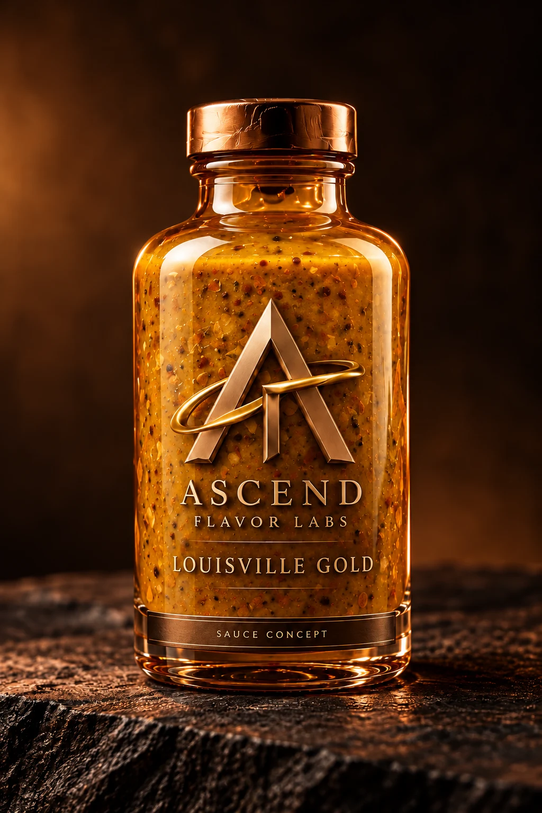
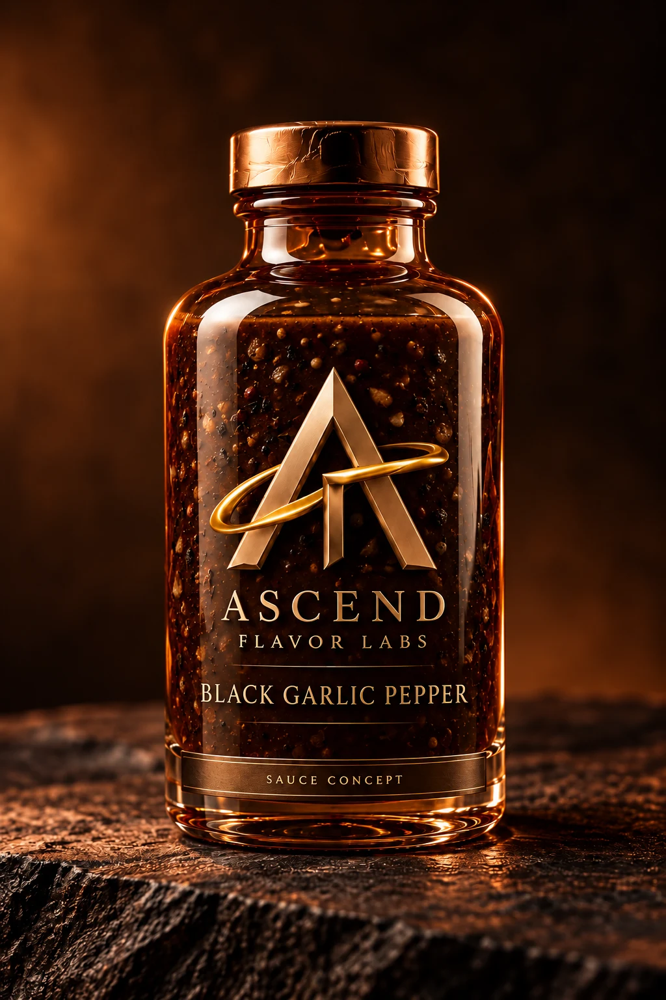
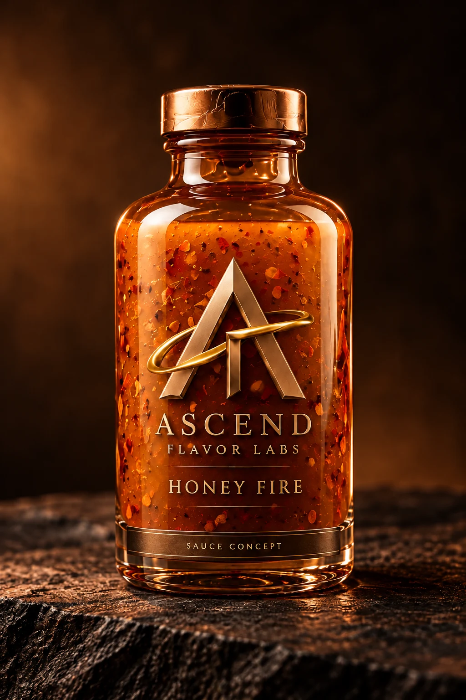
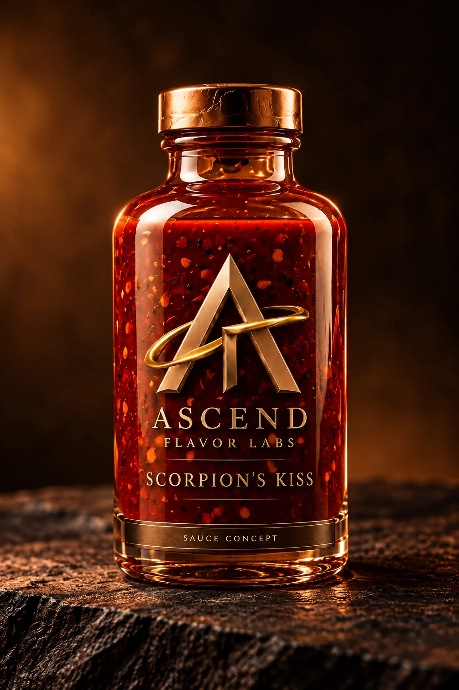
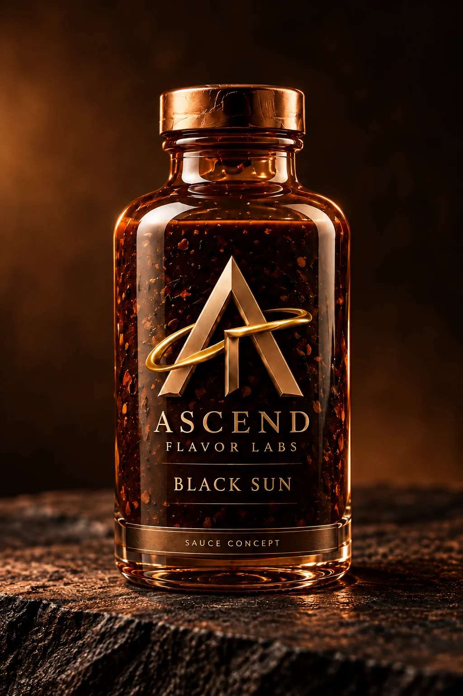

01
View bottleIn development
Desert Ember
Smoke · Warm spice · Sweetness
Smoke and warm spice meet citrus brightness and a touch of sweetness. Inspired by Middle Eastern and Eastern Mediterranean memories, with layers of flavor leading the way.
Signature flavors
Six personalities. Six starting points for a memorable meal. Discover the smoke, tang, sweetness, savory depth, and heat behind our first collection.
The development collection
Our first collection is in development. Products are not yet available for purchase. Bottle images show our 12 oz packaging direction; sauce colors are illustrative development concepts.
Smoke · Warm spice · Sweetness
Smoke and warm spice meet citrus brightness and a touch of sweetness. Inspired by Middle Eastern and Eastern Mediterranean memories, with layers of flavor leading the way.

View bottleIn developmentMustard · Sweetness · Kentucky inspiration
Tangy mustard, a little sweetness, and Kentucky inspiration. Louisville Gold explores a golden balance with depth beyond the first bite.

View bottleIn developmentSavory depth · Garlic · Pepper
Deep, rounded black garlic meets a distinct pepper finish. A savory direction for those drawn to depth as much as heat.

View bottleIn developmentHoneyed sweetness · Warming chile
Honeyed sweetness opens the door to warming chile. The aim is a sweet-heat balance that keeps you tasting the layers underneath.

View bottleIn developmentHeat collection · Sweetness · Chile
A sweet-tangy foundation with a pronounced chile character. Scorpion’s Kiss explores a bolder heat experience without leaving flavor behind.

View bottleIn developmentHeat collection · Dark depth · Roasted notes
Roasted character, bittersweet depth, and a powerful chile finish. Black Sun explores the darker side of the collection.
Ascend Foundations
Buffalo, Garlic Parmesan, Mango Habanero, and Honey BBQ are also in the development queue. The goal is to keep each familiar sauce recognizable while exploring a richer, more layered experience.
See our process